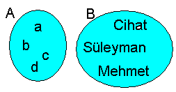
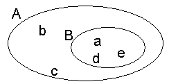
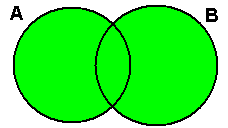
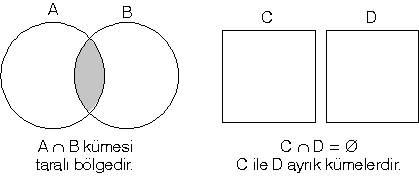
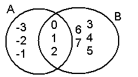
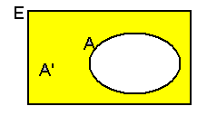
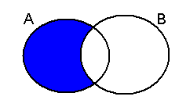

Kümenin kesin bir tanımı yoktur. Matematikte küme tanımsız bir kavram olmakla beraber, küme denince aklımıza nesnelerden meydana gelen topluluk gelir.
Küme kavramını örneklerle açıklayalım.
Örnek:
A = { 1, 3, a, 4} bir kümedir. 1, 3, a, 4 bu kümenin elemanlarıdır. A kümesinin 4 tane elemanı vardır. Bunu s(A) = 4 şeklinde yazarak belirtiriz. Bir elemanın kümeye ait olduğunu ∈, ait olmadığını ∉ işaretiyle belirtiriz.
1∈ A, 3 ∈ A, a ∈ A, 4 ∈ A, 5 ∉A dır.
Örnek:
A = { #, 2, {1, 3}, 4} kümesi 4 elemanlıdır.
Yani s(A) = 4 tür.
# ∈ A, 2 ∈ A, {1, 3} ∈ A, 4 ∈ A dır. Ancak 1 ∉ A ve 3 ∉ A dır.
Kümenin bütün elemanlarını { } sembolü içerisine yazarak belirttiğimiz kümeye liste yöntemi ile gösterim diyoruz.
Örnek:
A = { 3, 6, 7, 8, 12}
B = { a, x, y, z, t, k}
C = { Mehmet, Hasan, Mustafa, Kemal, Osman, Ali, Zeynep, Gonca}
D = { keçi, koyun, tavuk, inek, at, zebra}
kümeleri liste yöntemi ile gösterilmiştir.
Kümelerin elemanlarının ortak özelliğini belirterek yazdığımız kümeye ortak özellik yöntemi ile yazılmış küme denir.
Örnek:
A = { x | x, haftanın günleri}
B = { x | x, sınıfımızdaki gözlüklü erkek öğrenciler}
C = { x | -3 < x <20, x tek sayı }
kümeleri ortak özelik yöntemi kullanılarak yazılmış kümelerdir.
Hiç elemanı olmayan kümeye boş küme denir. Boş küme { } veya ∅ simgesi ile gösterilir.
s(A) = 0 dır. Yani boş kümenin eleman sayısı sıfırdır.
Örnek:
A = {0} kümesi boş küme değildir.
0 ∈ A dır ve s(A) = 1 dir.
B = {∅} kümesi boş küme değildir. ∅ ∈ B dir. s(B) = 1 dir.
C = { x | x2 + 4 = 0, x reel sayı} kümesi boş kümedir.
Çünkü x2 + 4 = 0 ⇒ x2 = -4 olur. Karesi sıfırdan küçük bir sayıya eşit olan bir reel sayıl olmadığı için C kümesi boş kümedir.
C = ∅ dir. s(C) = 0 dır.
Aynı elemanlardan oluşan kümelere eşit kümeler denir.
Örnek:
A = { x : 2 < x < 8, x asal sayı }
B = { x : 2 ≤ x < 9, x tek sayı }
kümelerini karşılaştıralım.
A = { 3, 5, 7 } ve
B = { 3, 5, 7 } olur.
A ve B kümlerinin bütün elemanları aynı olduğundan A = B ve s(A) = s(B) dir.
Kümenin elemanlarını kapalı eğrilerle çevrilmiş düzlem parçaları ile belirtmeye, kümenin venn şeması ile gösterilişi denir.
Örnek:
A = { a, b, c, d }
B = { Mehmet, Cihat, Süleyman }
kümeleri Venn şeması ile

şeklinde gösterilir.
Bir B kümesinin bütün elemanları bir A kümesinin de elemanları ise B kümesi A kümesinin alt kümesidir denir. B ⊂ A şeklinde yada A ⊃ B şeklinde gösterilir, A kapsar B diye okunur.
Örnek:
A = { a, b, c, d, e} ve
B = { a, d, e } ise
A kümesi B kümesini kapsar. Yani B kümesi A kümesinin alt kümesidir.
B ⊂ A veya A ⊃ B şeklinde gösterilir.
Bunun venn şeması ile gösterimi

şeklindedir.
Örnek:
A = { 1, 2, 3, 4, 5}
B = { 1, 3, 5, 7} ise B kümesinin 1, 3, 5 elemanları A kümesinin de elemanıdır. Ancak elemanlarından 7 A kümesinin elemanı değildir. O halde A kümesi B kümesini kapsamaz.
Alt küme sayısı:
Bir kümenin eleman sayısı: n ise
Alt küme sayısı: 2n
Öz alt küme sayısı: 2n - 1 tanedir.
Örnek:
A = { 1, a, {2, 3}, 4, #, b} kümesinin
eleman sayısı: s(A) = 6
alt küme sayısı: 26 = 64
öz alt küme sayısı: 26 - 1 = 63 dür.
Uyarı:
n ve r doğal sayı ve n ≥ r ise
C( n, r ) = n! / (n - r)!. r! dir.
Bu bilgiyi n elemanlı bir kümenin r elemanlı alt kümelerinin sayısını bulurken kullanacağız.
Örnek:
A = {a, b, c, d, e} kümesinin 2 elemanlı alt kümelerinin sayısı kaçtır?
s(A) = 5 tir.
C(5, 2) = 5! / (5 - 2)!. 2!
= 120 / 12
= 10 dur.
Örnek:
32 tane alt kümesi bulunan bir A kümesinin en fazla 2 elemanlı alt kümelerinin sayısı kaçtır?
Çözüm:
n elemanlı bir kümenin alt kümelerinin sayısı: 2n dir.
2n = 64 ise
2n = 26 ise n = 6 dır.
Bizden istenen alt kümeler: 0 elemanlı, 1 elemanlı ve 2 elemanlıdır.
0 elemanlı alt küme satısı: 1( boş küme)
1 elemanlı alt küme sayısı: 5(eleman sayısı kadar)
2 elemanlı alt küme sayısı: C(5, 2) = 5! / (5 - 2)!. 2! = 5.4.3.2.1 / 3.2.1.2.1 = 10 dur.
1 + 5 + 10 = 16
Kümelerin Birleşimi
A ve B kümelerinin ortak elemanlarından birer tane (ortak eleman varsa) ortak olmayan elemanların tamamı alınarak oluşturulan yeni kümeye A ve B kümelerinin birleşimi denir.
A U B = { x ∈ A veya x ∈ B} biçiminde yazılır.
A U B kümesi venn şeması ile

şeklinde gösterilir. Taralı bölgenin tamamı A U B kümesidir.
A ve B kümeleri verilsin. A ve B kümelerinin ortak elemanlarını alarak oluşturulan yeni kümeye A kesişim B kümesi denir.
A ∩ B = { x | x ∈ A ve x ∈ B } biçiminde yazılır.
C ∩ D = ∅ ise C ve D kümelerinin ortak elemanı yoktur. Ortak elemanı olmayan kümelere ayrık kümeler denir.
Kesişim kümesi ile ayrık kümeler venn şeması ile

biçiminde gösterilir.
Örnek:
A = {-3, -2, -1, 0, 1, 2, 3} ve
B = { x | 2x -5 < 7, x doğal sayı} ise A ∩ B kümesini bulalım.
B = {0, 1, 2, 3, 4, 5}
A ∩ B = {0, 1, 2, 3} bulunur.
Venn şeması ile

biçiminde gösterilir.
Kümelerin kesişim ve birleşimi ile ilgili bağıntılar:
Bir kümenin tümleyeninden söz edebilmek için ilk önce evrensel küme adı verilen ve yeteri kadar elemanı olan bir küme belirlemeliyiz.
Evrensel kümeyi: E, A kümesinin tümleyenini de A' biçiminde göstereceğiz.
A' = { x | x ∉ A ve x ∈ E} biçiminde tanımlanır.
Venn şeması ile

şeklinde gösterilir
Aynı E evrensel kümesinde A, B kümeleri verilsin, A ya ait olup da B ye ait olmayan elemanlardan oluşan kümeye A ile B nin farkı denir ve A / B veya A - B şeklinde yazılır.
A - B = A / B = { x | x ∈ A ve x ∉ B } biçiminde ifade edilir.
x ∉ B ⇒ x ∈ B' dir. O halde;
A - B = { x | x ∈ A ve x ∈ B' } = A ∩ B' olur
Venn şeması ile

şeklinde gösterilir.